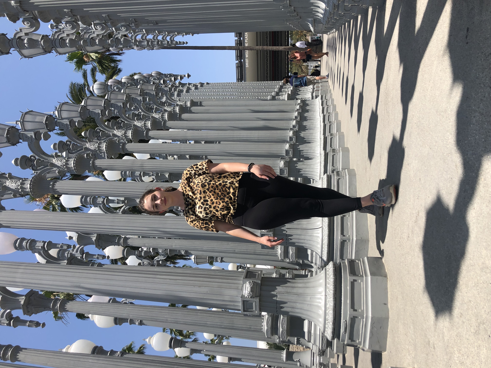

Before all else, introductions proceed me!

I am an 18 year old girl from metro Detroit who loves to code!
I started coding because of Karlie Kloss and her nonprofit organization Kode with Klossy in the summmer of 2017! I was a scholar for two years and had the opportunity to teach a website development class in Los Angeles and Philadelphia in the summer of 2019! By being in the Kode with Klossy community all the women have truly empowered me and inspired me!
I really want to work for a business and be apart of something that matters!
Copyright © 2019 · Cristina Powers